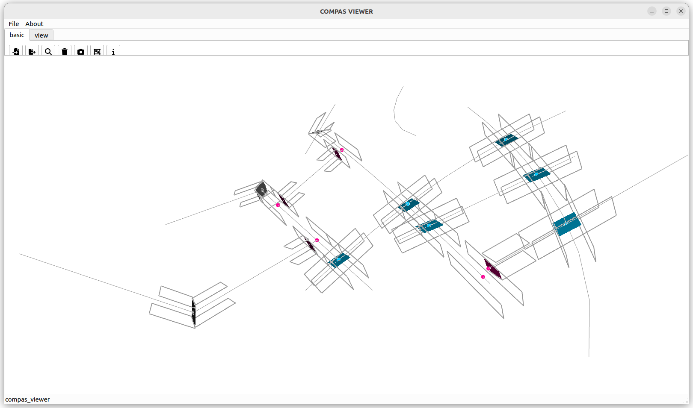

binding_beam_volumes_multiple

from compas.geometry import Polyline
from compas_wood.binding import beam_volumes
input_polylines = [
Polyline([
[297.037012066934, 126.422271499885, -178.188030913779],
[321.489409568039, 169.111942318764, -186.869036108803],
[345.941807069144, 211.801613137642, -195.550041303827],
[370.394204570249, 254.491283956521, -204.231046498851]
]),
Polyline([
[182.634858082301, 98.7137182074149, -78.306080246581],
[211.235396578459, 105.640856530532, -103.27656791338],
[239.835935074617, 112.56799485365, -128.24705558018],
[268.436473570776, 119.495133176767, -153.217543246979],
[297.037012066934, 126.422271499885, -178.188030913779]
]),
Polyline([
[-125.19241232501, 107.875422065027, -39.2649958323028],
[-75.705277009549, 107.25372412331, -42.5192301219386],
[-26.8203151230943, 105.243836458838, -50.6895979092208],
[21.1131439030443, 102.043760643015, -63.0656900444498],
[67.9151143837992, 97.8400491497485, -78.9813305497922],
[113.521085871532, 92.7952640964856, -97.8579657684805],
[157.936920791687, 87.0452505103035, -119.213391744547],
[201.207350715535, 80.7012045875338, -142.653744283013]
]),
Polyline([
[-10.3599318150342, 38.7282123158674, -287.206518566188],
[-31.7764187502288, 49.1160173176098, -249.870793280387],
[-46.147480668278, 60.3975803199585, -209.510751764339],
[-54.662795188934, 72.1419219251921, -167.63145233557],
[-58.5361339307107, 84.0926783823342, -125.117457662038],
[-58.7606503977529, 96.1110401814458, -82.4406121991002],
[-56.0905042124202, 108.124674519414, -39.8417855305585],
[-51.0879024066377, 120.096820292103, 2.56039219002248],
[-44.1738209609492, 132.009588674272, 44.7113106559208],
]),
Polyline([
[-188.240159298455, 75.8808592794907, -151.530383786316],
[-145.963074583616, 73.7325840014969, -160.05232439351],
[-103.685989868776, 71.5843087235031, -168.574265000704],
[-61.4089051539373, 69.4360334455093, -177.096205607898],
[-19.1318204390981, 67.2877581675155, -185.618146215092],
[23.1452642757411, 65.1394828895218, -194.140086822286],
]),
Polyline([
[-96.6199846476256, 90.1021988025274, -110.227043500606],
[-48.9174102895825, 87.3983183807673, -111.648442107134],
[-1.21483593153943, 84.6944379590072, -113.069840713663],
[46.4877384265037, 81.9905575372471, -114.491239320191],
[94.1903127845467, 79.286677115487, -115.91263792672],
]),
Polyline([
[132.972124919423, 138.449055887252, 86.074977722597],
[167.267793637183, 134.152861891673, 62.679797641331],
[201.563462354943, 129.856667896093, 39.2846175600651],
[235.859131072703, 125.560473900514, 15.8894374787991],
]),
Polyline([
[129.410585091899, 71.8669625143157, -172.501597971961],
[151.870897769568, 83.1961266976715, -132.75167444875],
[174.331210447238, 94.5252908810273, -93.0017509255386],
[196.791523124907, 105.854455064383, -53.2518274023273],
[219.251835802577, 117.183619247739, -13.5019038791161],
[241.712148480247, 128.512783431095, 26.2480196440951],
[264.172461157916, 139.84194761445, 65.9979431673064],
]),
Polyline([
[164.938767042065, 160.473718227021, 163.598974047964],
[147.837376054901, 149.074854470926, 123.488214523064],
[131.218069322568, 137.625923389656, 83.1894892076615],
[115.06311204992, 126.130413515365, 42.715559558341],
[99.3556294473208, 114.591526704951, 2.07815097714067],
[84.0795669982659, 103.012205524298, -38.7119491181474],
[69.2196466793098, 91.3951546375981, -79.6448144234582],
[54.7613339074588, 79.7428674496858, -120.71128445365],
[40.6907906778078, 68.0576389813056, -161.902917836579],
[26.9948513423117, 56.3415940716198, -203.2118916656],
]),
Polyline([
[114.821035246594, 198.058111884719, 106.829580839264],
[139.879901144329, 179.26591505587, 135.214277443614],
[164.938767042065, 160.473718227021, 163.598974047964],
[189.9976329398, 141.681521398171, 191.983670652314],
[215.056498837535, 122.889324569322, 220.368367256664],
]),
Polyline([
[264.172461157916, 139.84194761445, 65.9979431673064],
[312.86620413861, 146.859577749078, 57.3169379722823],
[361.559947119303, 153.877207883706, 48.6359327772582],
[410.253690099997, 160.894838018334, 39.954927582234],
]),
Polyline([
[13.7562673016774, 164.804159616155, 178.132387775678],
[31.0555420852146, 160.035948344655, 140.217407062733],
[42.5288946455757, 155.666866376768, 100.123423196389],
[46.7750711952287, 151.895205966801, 58.5935066719183],
[42.9566247038049, 148.911475312983, 16.9636577178732],
[31.3140030201931, 146.81417226681, -23.2519859176756],
]),
]
input_polylines_segment_radii = []
for i in range(len(input_polylines)):
input_polyline_segment_radii = []
for j in range(len(input_polylines[i].points)):
input_polyline_segment_radii.append(10)
input_polylines_segment_radii.append(input_polyline_segment_radii)
input_polylines_segment_direction = []
for i in range(len(input_polylines)):
input_polyline_segment_direction = []
for j in range(len(input_polylines[i].points)-1):
input_polyline_segment_direction.append([0, 1, 0])
input_polylines_segment_direction.append(input_polyline_segment_direction)
index_polylines, index_polylines_segment, distance, point_pairs, volume_pairs, joints_areas, joints_types = beam_volumes(
input_polylines,
input_polylines_segment_radii,
input_polylines_segment_direction,
input_allowed_types_per_polyline=[-1],
input_min_distance=20,
input_volume_length=75,
input_cross_or_side_to_end=0.91,
)
try:
from compas_viewer import Viewer
from compas.geometry import Scale
from compas.geometry import Polygon
colors = {
10: (255, 0, 0), # Side-to-side rotated
11: (0, 255, 0), # Side-to-side out-of-plane
12: (0, 0, 255), # Side-to-side in-plane
13: (100, 100, 100), # Side-to-side in-plane
20: (255, 0, 150), # Top-to-side
30: (0, 200, 255) # Cross
}
viewer = Viewer(show_grid=False, rendermode='lighted')
scale = 1e-2
for polyline in input_polylines:
polyline.transform(Scale.from_factors([scale, scale, scale]))
viewer.scene.add(polyline, show_points=False, lineswidth=1, linecolor=(150, 150, 150))
for id, p in enumerate(point_pairs):
for point in p:
point.transform(Scale.from_factors([scale, scale, scale]))
viewer.scene.add(point, size=10, pointcolor=colors[joints_types[id]])
for volume in volume_pairs:
for polyline in volume:
polyline.transform(Scale.from_factors([scale, scale, scale]))
viewer.scene.add(polyline, show_points=False, lineswidth=2, linecolor=(150, 150, 150))
for id, joint_area in enumerate(joints_areas):
joint_area.transform(Scale.from_factors([scale, scale, scale]))
viewer.scene.add(Polygon(joint_area.points[:-1]).to_mesh(),
show_points=False,
show_lines=False,
facecolor=colors[joints_types[id]])
viewer.show()
except ImportError:
print("compas_viewer is not installed.")